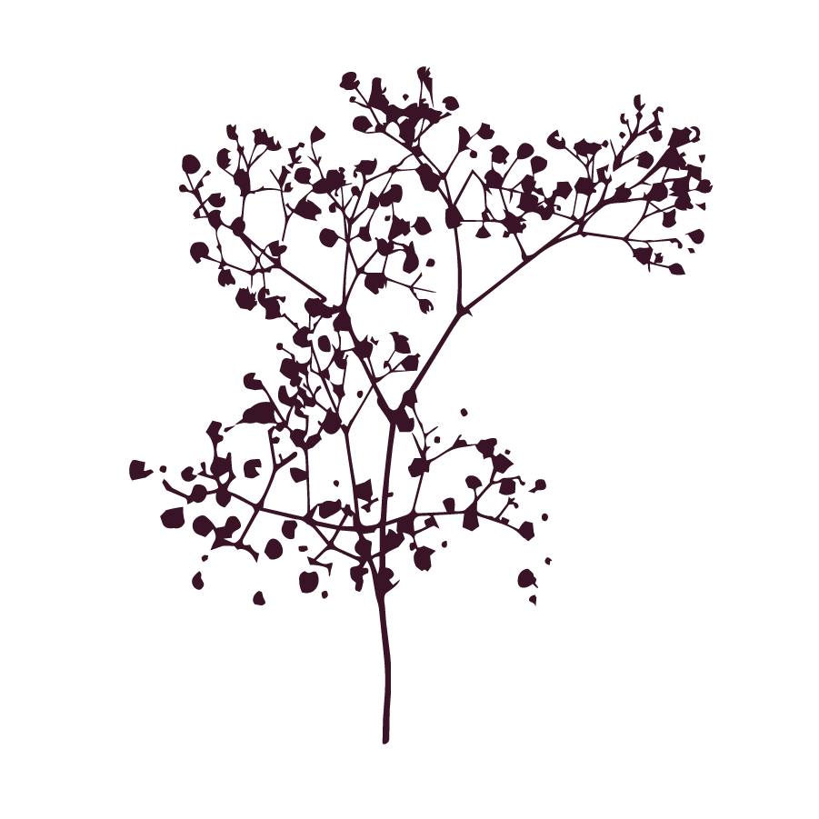

WHEN INTERACTING WITH SCREENS WE LACK RESISTANCE. SWIPING SCREENS MAKES OUR WORLD MORE SUPERFICIAL. HUMAN LIFE GAINS DEPTH WHEN HAVING THING-RELATIONS. THING-RELATIONS TEND TO BRING US TOGETHER PHYSICALLY AND CREATE CONNECTIONS. DESIGNING FRICTION REQUIRES THINKING ABOUT HOW TO INCREASE OUR RESISTANCE. HOW CAN WE ENGAGE OUR HANDS AND WHOLE BODIES? HOW CAN THESE BODILY ENGAGEMENTS BRING US TOGETHER?